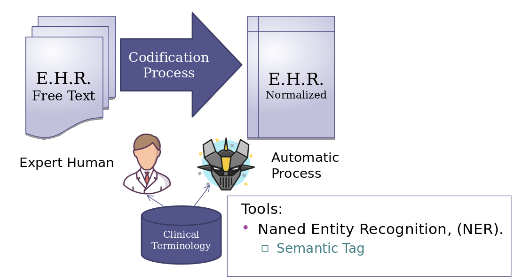
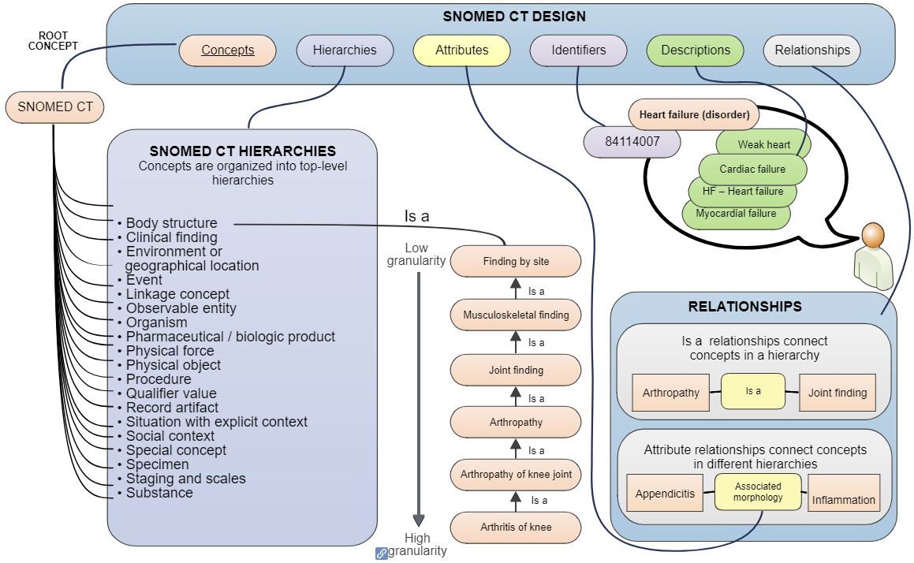

CBMS 2019 IEEE International Symposium on Computer-Based Medical Systems
Snomed2Vec: representation of SNOMED-CT terms with Word2Vec
Ignacio Martinez Soriano
(05-07)-Jun-2019 (Cordoba)
Medlab MediaGroup S.L.
Hospital University "Rafael Mendez"
University of Granada
University of Murcia
Snomed2Vec
- Introduction
- Word Embeddings
- Snomed-CT
- Snomed2Vec Implementation
- Use Cases
- Evaluation and Tips
- Conclusion and Outlook
- Project Web And Notebooks
1. Introduction:
Introduction:
Hospital Information Systems (H.I.S) use Electronic Health Record to store heterogeneous data from the patients.
The free text in the (EHR), it's necesary to identify the clinical concept with a Clinical Terninology Code.
Snomed2Vec, is an ontology based named entity recognition system using word embedding, that suggest what is the most similar concept, that appear in a text.
Mapping Clinical Concept:
To identify the diagnosis and procedure, from the free text, we need a Clinical Terminology (ICD-10-MC,Snomed-CT..)
This process is heavy and need an expert.
Spanish NER Tool approach:
We present Snomed2Vec, a tool to improve the ontology- based named entity recognition process, that suggest what is the most similar concepts from Snomed-CT grouping by its top level hierarchy.
Background and Related Work:
Different approach of Ontology-Based Names Entity recognition.
- Ontology Matching.
- Named Based Techniques.
- Word Embedding Ontology Matching.
Try to solve a problem of semantic heterogeneity
Try to identify the most similar string in a text search
Represent entities in ontologies with word embedding
2. Word embedding:
Initial Idea:
Definición de Word Embedding y el Enfoque de Word2Vec.
3. Snomed-CT:
Snomed-CT
Systematized Nomenclature of Medicine Clinical Terms
Component, is organized in concepts, descriptions and relationships:
Concepts, is the way to represent a clinical concept.
Descriptions, represeting the human readable term of a concept
Relationships, represent an association between concepts.
The meaning of the concept has a hierarchy structure, from general to more detail.
Logic Model (1/2)

Logic Model (2/2)
4. Snomed2Vec Approach:
Nachus' Page
Pagina personal del Autor de la presentacion
5. Use Cases:
Clever Quotes
These guys come in two forms, inline: The nice thing about standards is that there are so many to choose from
and block:
“Tell me who go with you, and I'll tell you Who you are.”
6. Use Cases:
State Events
Additionally custom events can be triggered on a per slide basis by binding to the data-state name.
Reveal.addEventListener( 'customevent', function() {
console.log( '"customevent" has fired' );
} );
7. Evaluation and tips:
Evaluation and Tips:
8. Conclusion and Outlook:
THE END
Autores:
- Ignacio Martínez Soriano
- Juan Luis Castro Peña
- Jesualdo Tomas Fenandez Breis
- Ignacio San Roman Lana
- Adrian Alonso
- David Guevara Baraza